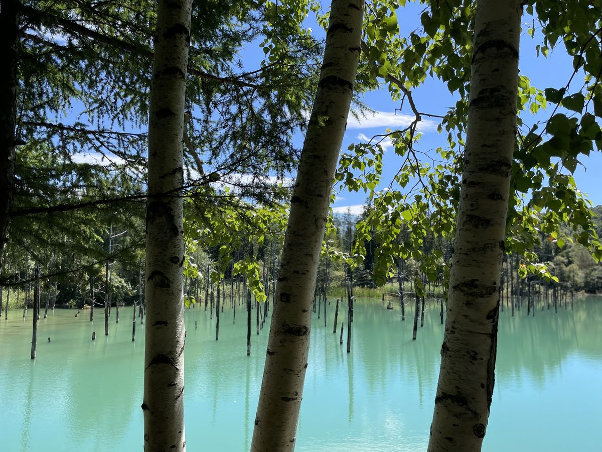
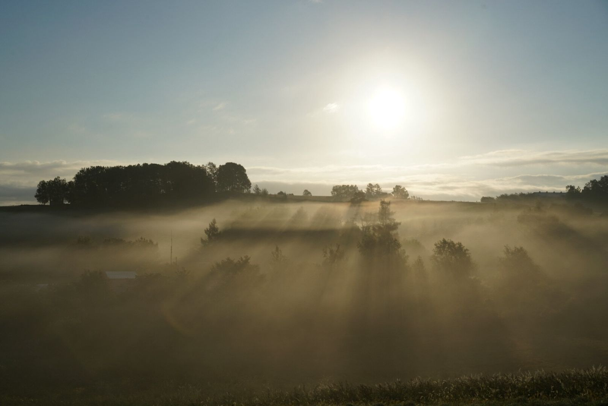
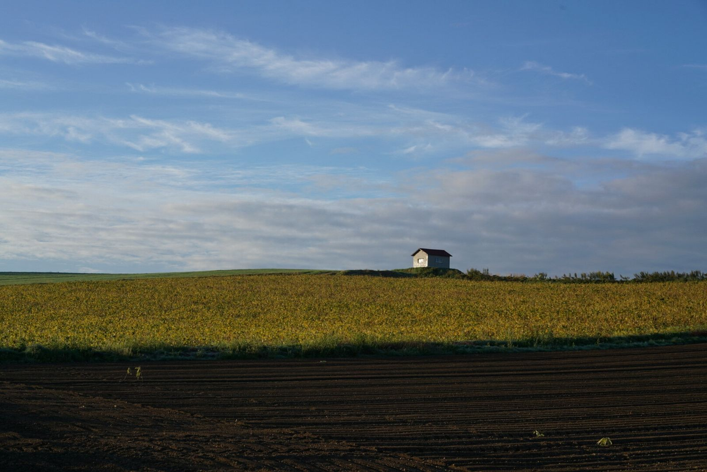
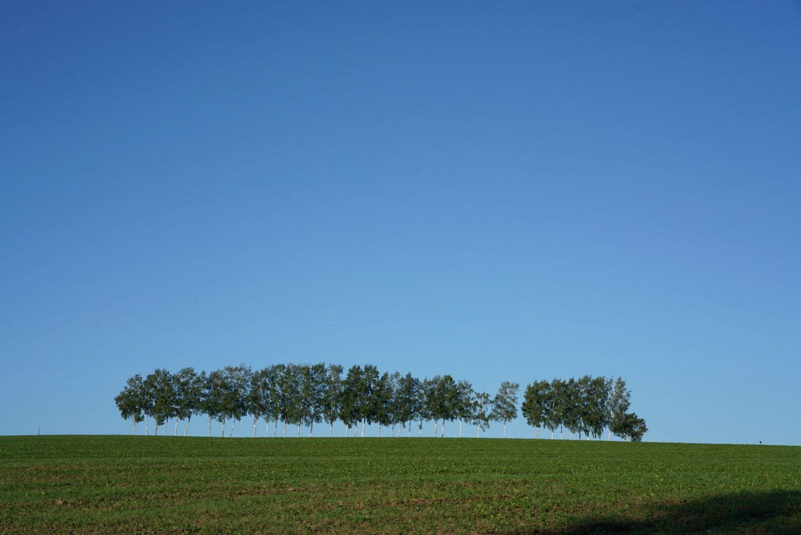
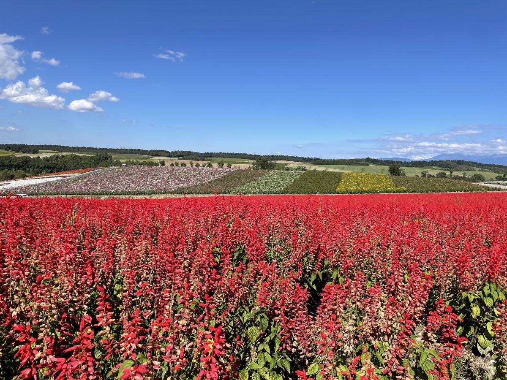

Blue Pond Score
今日の青い池スコア
--
計算中…
※ 雲量・直近の降水・風から算出した推定です。実際の色を保証するものではありません。 スコアの仕組み →
Biei, Hokkaido
データで読む、美瑛のいま — 青い池・朝霧・丘の色

Blue Pond Score
計算中…
※ 雲量・直近の降水・風から算出した推定です。実際の色を保証するものではありません。 スコアの仕組み →

Morning Fog Forecast
計算中…
※ 放射冷却型の朝霧(晴天・無風・高湿度)の条件充足度です。 スコアの仕組み →
Sun Timetable
Hill Color Calendar
--
※ 平年の目安です。天候により1〜2週間前後します。
Wheat Season Meter
計算中…
※ 美瑛の日平均気温の積算(基準0℃・4/1起点)を過去10年の平年ペースと比較した相対推定です。品種・播種時期・畑により1週間以上前後します。 計算方法 →
Field Notes
スコアの元になっているのは、実際に美瑛の丘を歩いた記憶です。写真はすべて管理人が撮影したものです。



もっと見る → Instagram @biei_explorer
Lab
次のテーマは「宇宙から見る美瑛」。衛星データの機能を準備しています。